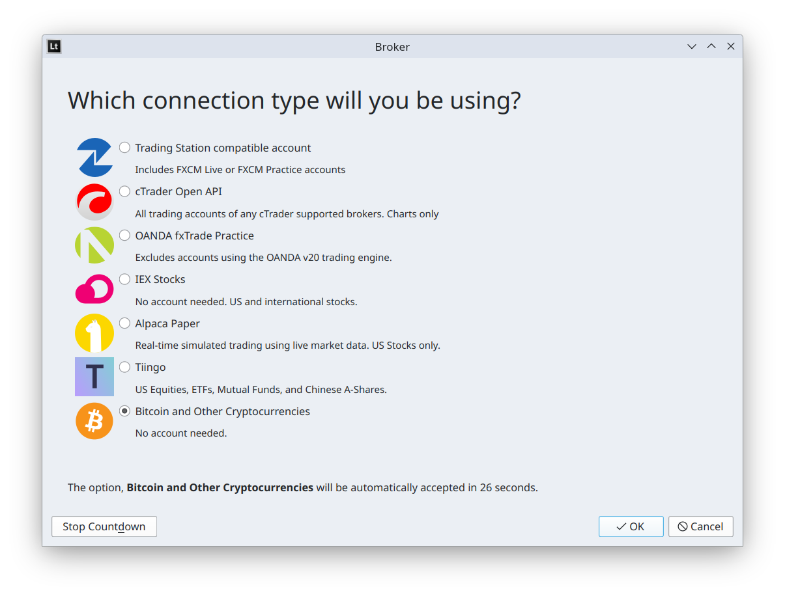

Broker Selection window¶
This window is displayed when you open Latinum.
After 30 seconds, this window will automatically select the option you chose the last time you opened Latinum. Press Stop Countdown if you want more time to read the options. The actual items listed may be different in your version of Latinum. If this window is not shown, your version or edition of Latinum does not support broker selection.